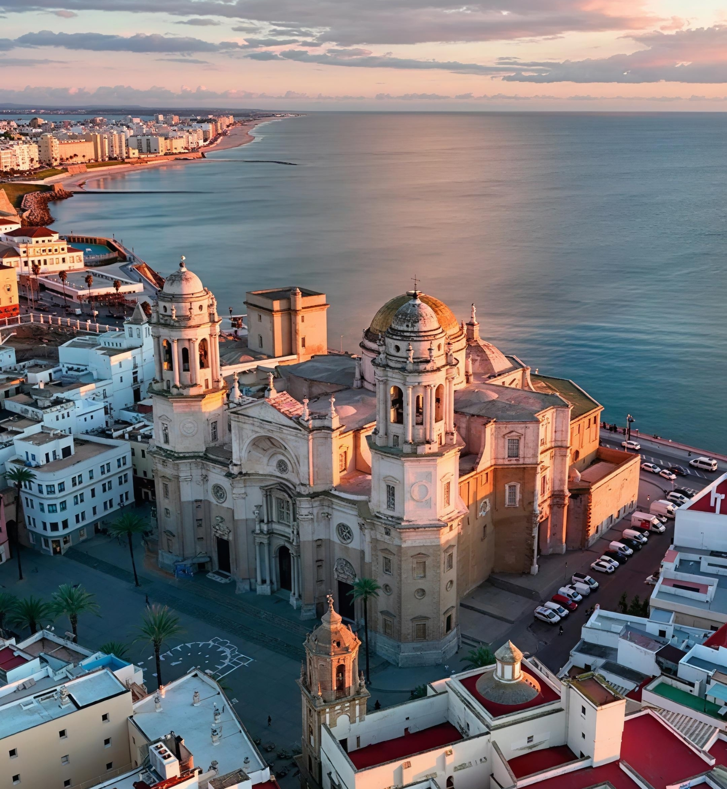
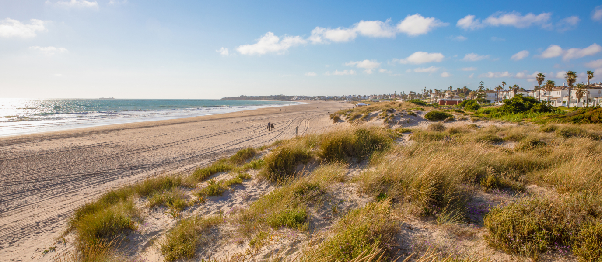

España: Cádiz y Chiclana de la Frontera
Sol, historia y playas en la costa de la luz

Descripción
Cádiz es una de las ciudades más antiguas de Europa, ubicada en el sur de España, en la región de Andalucía. Rodeada casi por completo por el mar, su casco histórico mezcla plazas, calles estrechas, murallas y una catedral de cúpula dorada que domina el paisaje.
A pocos kilómetros se encuentra Chiclana de la Frontera, un municipio tranquilo conocido por sus playas de arena fina, sus pinares y su gastronomía, donde destaca el pescado fresco y el atún. Es un lugar ideal para descansar sin alejarse de la ciudad.
Combinar ambos destinos permite disfrutar de cultura e historia en Cádiz y de playa y relax en Chiclana. Es un viaje perfecto para quienes buscan una experiencia auténtica del sur de España.
Sitios para visitar
- Catedral de Cádiz y su torre
- Barrio de La Viña y Playa de La Caleta
- Torre Tavira (vistas de la ciudad)
- Playa de La Barrosa (Chiclana)
- Castillo de Sancti Petri (Chiclana)
- Casco histórico de Chiclana
Tiempo de estadía recomendado
5 a 7 días
Precios estimados por persona (USD)
- Vuelo ida y vuelta desde Panamá (vía Sevilla) $950
- Hospedaje (5 noches) $650
- Catedral de Cádiz $12
- Torre Tavira $9
- Excursión al Castillo de Sancti Petri $17
- Comidas y transporte local $300
- Total estimado $1,940
Precios aproximados consultados en octubre de 2026. Pueden variar según la fecha y la temporada.
Galería del destino
